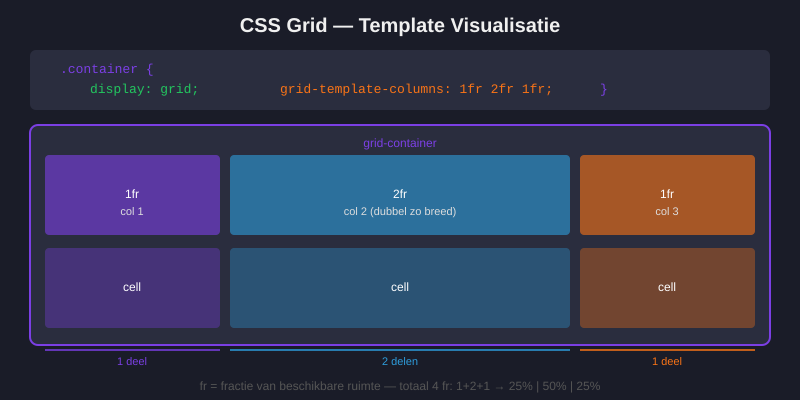
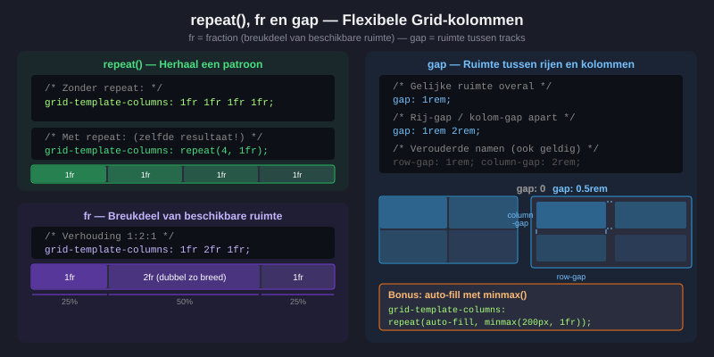
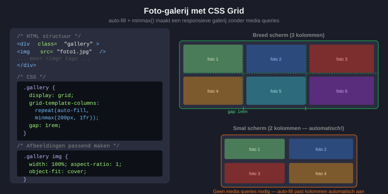
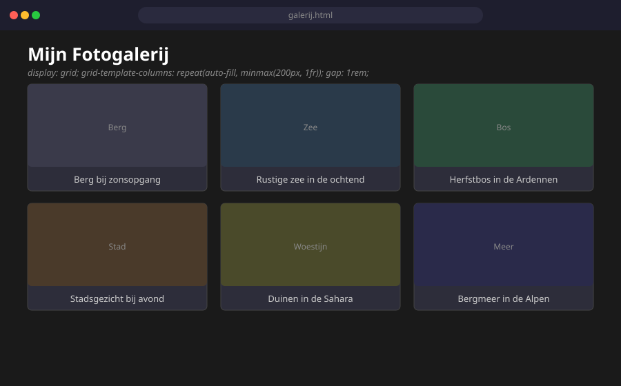

CSS Grid
- Uitleggen wat CSS Grid is en wanneer je het gebruikt
- Het verschil kennen tussen Grid en Flexbox
display: grid,grid-template-columnsengrid-template-rowstoepassen- De
fr-eenheid begrijpen en gebruiken gapinstellen voor ruimte in een gridauto-fillenauto-fitgebruiken voor automatische kolommen- Eenvoudige span-technieken gebruiken (
grid-column,grid-row) - Een fotogalerij en kaartenlay-out bouwen
1. Wat is CSS Grid?
In maart 2017 implementeerden alle grote browsers CSS Grid op dezelfde weken. Dat was groot nieuws, want designers zijn van oudsher opgeleid om met rasters te werken.
Voor die tijd gebruikte men floats of CSS-frameworks zoals Bootstrap. CSS Grid is de moderne, ingebouwde oplossing.
Wat doet Grid? Grid laat je toe om een tweedimensionaal raster te definiëren: rijen én kolommen tegelijk. Je plaatst daarna elementen in dat raster.

2. Grid vs. Flexbox — wanneer gebruik je wat?
"Flexbox is for one-dimensional layout. A row OR a column. Grid is for two-dimensional layout. Rows AND columns." — Rachel Andrew
| Situatie | Gebruik |
|---|---|
| Navigatiebalk (één rij) | Flexbox |
| Kaartjes naast elkaar (één rij) | Flexbox of Grid |
| Volledig paginalay-out (rijen én kolommen) | Grid |
| Fotogalerij | Grid |
| Elementen centreren | Flexbox |
| Dashboard met kolommen en rijen | Grid |
3. Een grid aanmaken
.container {
display: grid;
}<div class="container"> <!-- grid-container -->
<div>Item 1</div> <!-- grid-item -->
<div>Item 2</div> <!-- grid-item -->
<div>Item 3</div> <!-- grid-item -->
</div>Zonder verdere instellingen plaatst Grid alle items automatisch onder elkaar (één kolom).
4. Kolommen definiëren: grid-template-columns
.container {
display: grid;
grid-template-columns: 200px 200px 200px; /* drie kolommen van 200px */
}Pixels zijn niet flexibel. Daarvoor hebben we de fr-eenheid.
5. De fr-eenheid — fractions
fr staat voor fraction (breuk). Het verdeelt de beschikbare ruimte proportioneel.
/* Drie gelijke kolommen */
.container {
display: grid;
grid-template-columns: 1fr 1fr 1fr;
}
/* Twee kolommen: één smal (1 deel) en één breed (2 delen) */
.container {
display: grid;
grid-template-columns: 1fr 2fr;
}
/* Zijbalk van 250px, rest van de ruimte voor de inhoud */
.pagina {
display: grid;
grid-template-columns: 250px 1fr;
}6. Rijen definiëren: grid-template-rows
.container {
display: grid;
grid-template-columns: 1fr 1fr;
grid-template-rows: 100px 200px; /* eerste rij 100px, tweede rij 200px */
}In de meeste gevallen definieer je alleen kolommen en laat je de rijen automatisch bepalen. Grid is slim genoeg om de rijen te berekenen op basis van de inhoud.
7. Ruimte tussen cellen: gap
.container {
display: grid;
grid-template-columns: 1fr 1fr 1fr;
gap: 1rem; /* gelijke ruimte rondom en boven/onder */
/* of: */
gap: 1rem 2rem; /* rij-gap | kolom-gap */
}8. De repeat()-functie
/* Drie gelijke kolommen — omslachtig: */
grid-template-columns: 1fr 1fr 1fr;
/* Zelfde, maar met repeat — beter: */
grid-template-columns: repeat(3, 1fr);
/* Vier kolommen van 200px: */
grid-template-columns: repeat(4, 200px);
9. Automatische kolommen: auto-fill en auto-fit
.container {
display: grid;
grid-template-columns: repeat(auto-fill, minmax(200px, 1fr));
gap: 1rem;
}Wat doet dit?
auto-fill: Maak zoveel kolommen als er passenminmax(200px, 1fr): Elke kolom is minstens 200px breed en maximaal 1fr
Resultaat: Op een breed scherm staan er veel kolommen naast elkaar. Op een smal scherm worden het automatisch minder kolommen. Geen media queries nodig!
Het verschil tussen auto-fill en auto-fit:
auto-fill: Houdt lege kolommen aan als er niet genoeg items zijnauto-fit: Laat de bestaande items uitrekken als er lege kolommen zouden zijn
10. Items over meerdere kolommen/rijen laten lopen
.groot-item {
grid-column: span 2; /* dit item neemt 2 kolommen in */
}
.lang-item {
grid-row: span 2; /* dit item neemt 2 rijen in */
}Voorbeeld: een uitgelicht kaartje
.container {
display: grid;
grid-template-columns: repeat(3, 1fr);
gap: 1rem;
}
.kaart--uitgelicht {
grid-column: span 2; /* neemt twee kolommen in */
}11. Een fotogalerij bouwen
<section class="galerij">
<figure><img src="foto1.jpg" alt="Berg"></figure>
<figure><img src="foto2.jpg" alt="Zee"></figure>
<figure><img src="foto3.jpg" alt="Bos"></figure>
<figure><img src="foto4.jpg" alt="Stad"></figure>
</section>.galerij {
display: grid;
grid-template-columns: repeat(auto-fill, minmax(250px, 1fr));
gap: 1rem;
}
.galerij figure {
margin: 0;
}
.galerij img {
width: 100%;
height: 200px;
object-fit: cover; /* afbeelding wordt bijgesneden maar niet vervormd */
display: block;
}object-fit: cover is erg handig: de afbeelding vult de ruimte volledig maar wordt niet vervormd — ze wordt bijgesneden als dat nodig is.

Oefeningen
Maak een HTML-bestand galerij.html met een fotogalerij van minstens 6 afbeeldingen (gebruik placeholder-afbeeldingen van picsum.photos).
Eisen:
- Gebruik
display: gridmetauto-fill - Minimale kolombreedte van 200px
- Ruimte van
1remtussen de foto's - Foto's vullen hun cel volledig maar worden niet vervormd (
object-fit: cover)

Huistaak
Opdracht: CSS Grid portfolio
Maak een pagina portfolio.html met bijhorend portfolio.css. Je bouwt een portfoliopagina voor een fictieve web developer. De volledige lay-out wordt gebouwd met CSS Grid.
Deel 1 — Paginastructuur met Grid (4 punten)
- Gebruik
display: gridop het<body>-element of een wrapper met de rijen: header, nav, main, footer - De
<header>en<footer>nemen de volledige breedte in - Gebruik
grid-template-areasom de lay-out visueel te definiëren
Deel 2 — Projectenraster (4 punten)
- Een sectie met minstens 6 projectkaarten in een grid van 3 kolommen
- Gebruik
repeat(3, 1fr)ofrepeat(auto-fill, minmax(200px, 1fr)) - Eén kaart neemt 2 kolommen breed in via
grid-column: span 2 - Gebruik
gapvoor de tussenruimte
Deel 3 — Responsief (2 punten)
- Pas een
@media-query toe: op smallere schermen (< 640px) worden de projectkaarten 1 kolom breed
Vragenlijst
Controleer of je de leerstof van dit hoofdstuk begrijpt.
Wat doet grid-template-columns: repeat(3, 1fr)?
Wat betekent fr in CSS Grid?
Wat doet grid-column: span 2 op een grid-item?
Wat doet repeat(auto-fill, minmax(200px, 1fr))?
Welke CSS-eigenschap gebruik je om een afbeelding haar cel volledig te laten vullen zonder vervorming?
Wanneer kies je voor CSS Grid in plaats van Flexbox?